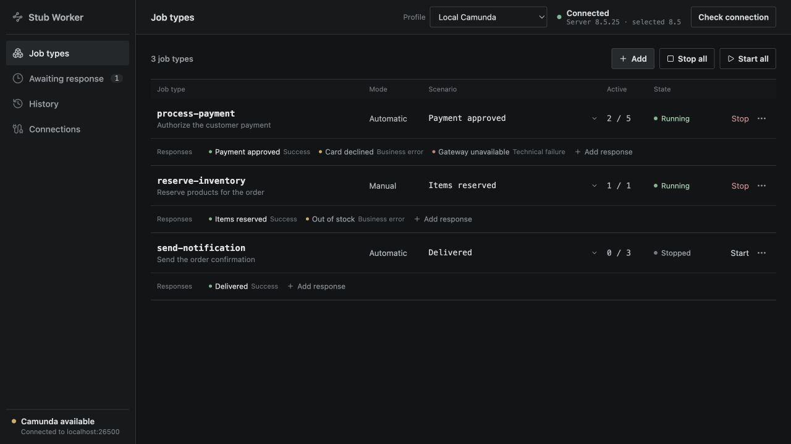

Test your process.
Stub the workers.
A desktop app for local Camunda 8 development. Define job types, choose a response, and test your process without writing worker code.
macOS · Windows · Linux

Choose the outcome. Return success, throw a business error, or simulate a technical failure.
Control the response. Run automatically or inspect and respond to jobs manually.
Keep it local. Save scenarios and response history on your computer.
For local Zeebe connections; verified with 8.5.25. Builds are unsigned. See installation and requirements.